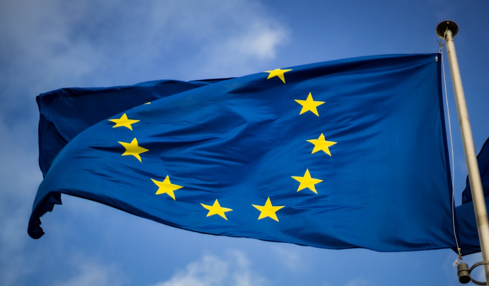

Tkaczyk News
SERWIS INFORMACYJNY
Nowa wizja Unii Europejskiej wedle Emmanuela Macrona
"Rzeczywistość jest taka, że mamy świat, który jest nie do zniesienia" - tak ostatnio wypowiada się prezydent Francji Emmanuel Macron, który rząda i dąży do zmian w UE. Planuje on dość dużą reformację. Proponuje on zaciągnięcie większego długu publicznego i duże inwestycje, w tym stworzenie wspólnotowych sił obronnych, aby Europa była pewnym środkiem ciężkości między Stanami Zjednocznonymi, a Chinami. Poza tym chce być gotowy do ewentualnej konfrontacji Europy z Rosją. "Rozszerzenie nie jest już marzeniem. Nadszedł czas, aby ruszyć do przodu. Jest jeszcze dużo pracy do zrobienia. To będzie trudne. Będzie to skomplikowane, czasem bolesne dla przyszłych państw członkowskich i UE. Ale powiedzmy sobie jasno. Jeśli chcemy być wiarygodni, uważam, że musimy rozmawiać o czasie. Przygotowując program strategiczny UE, musimy porozmawiać o naszej pracy i przedstawić sugestię. Musimy mieć jasny cel. Uważam, że do 2030r. obie strony muszą być gotowe na rozszerzenie." tak wypowiedział się Charles Michel, popierający Macrona. 30 stycznia prezydent Francji złożył deklaracje uczynienia Unii Europejskiej bardziej suwerenną. W komunikacie Pałacu Elizejskiego czytamy, że jest to chęć do wdrożenia niezbędnych łańcuchów dostaw. Wszystko to nabiera co raz większych możliwości bytu, a Francja cały czas dąży do swoich celów i niezależnej Europy. Możliwe jest, że czeka nas w niedalekiej przyszłości ogrom zmian, które mogą mieć na nas wpływ i na naszą przyszłość.
10.03.2024, 16:47